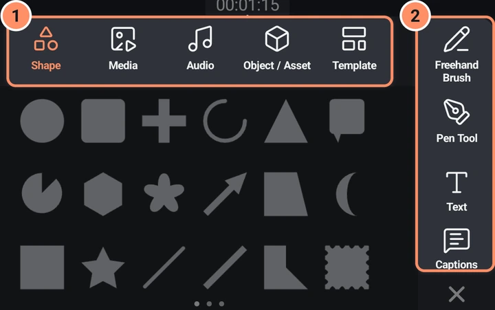
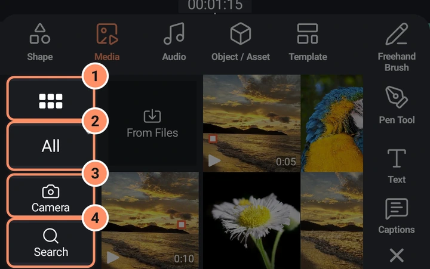
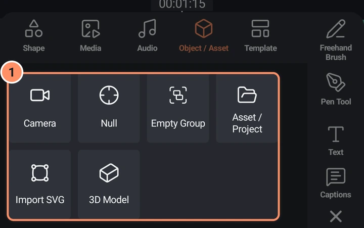

Add مینو
شکلیں، تصاویر، ویڈیو، آڈیو، ٹیکسٹ، ڈرائنگز، کیمرے، لائٹس، 3D ماڈلز اور مزید کس طرح شامل کریں۔
ٹائم لائن ایریا کے نیچے دائیں طرف گول + بٹن Add مینو کھولتا ہے۔ یہ صرف اُس وقت دکھتا ہے جب کچھ منتخب نہ ہو؛ کوئی لیئر منتخب کرنے پر یہ ٹول گرڈ سے بدل جاتا ہے۔
نئی لیئرز پلے ہیڈ سے شروع ہوتی ہیں اور اتنے دیر تک رہتی ہیں جتنا نئی لیئر کی لمبائی سیٹنگ میں ہوتا ہے (ڈیفالٹ 2 سیکنڈ)۔ تصاویر اور شکلیں وہی دورانیہ استعمال کرتی ہیں؛ ویڈیوز اور ساؤنڈز اپنا دورانیہ استعمال کرتے ہیں۔ کیمرہ اور لائٹ لیئرز پورے پروجیکٹ تک رہتی ہیں۔
مینو کے اوپر پانچ ٹیبز (شکل، میڈیا، آڈیو، آبجیکٹ / ایسیٹ اور ٹیمپلیٹ) اور دائیں طرف چار فوری بٹن ہوتے ہیں۔ X اسے بند کرتا ہے۔

فوری بٹن
- فری ہینڈ برش ڈرائنگ لیئر بناتا ہے اور ڈرائنگ ایڈیٹر کھولتا ہے۔ شکلیں، ڈرائنگ اور ماسک دیکھیں۔
- پین ٹول شکل کی لیئر بناتا ہے اور پوائنٹ ایڈیٹر کھولتا ہے تاکہ آپ نقطہ بہ نقطہ شکل بنا سکیں۔
- ٹیکسٹ ٹیکسٹ لیئر شامل کرتا ہے اور فوراً ٹیکسٹ ایڈیٹر کھولتا ہے۔ ٹیکسٹ اور فونٹس دیکھیں۔
- کیپشنز آٹو کیپشنز شیٹ کھولتا ہے۔ AI ٹولز دیکھیں۔
شکل
54 تیار شکلیں، ایک قطار میں چھ، ایسے صفحات میں جنہیں آپ سوائپ کرتے ہیں۔ کسی ایک پر ٹیپ کریں تو وہ کینوس کے بیچ میں بے ترتیب خوشگوار رنگ کے ساتھ شامل ہو جاتی ہے۔
انیس شکلیں پیرامیٹرک ہیں اور شکل کے آپشنز سے ایڈٹ ہوتی ہیں: دائرہ، گول کونوں والا مستطیل، پلس، قوس، مثلث، کال آؤٹ، پائی، کثیرالاضلاع، ملٹی فوائل، تیر، کواڈ، چاند، مستطیل، ستارہ، لکیر، چوڑی لکیر، غیر منتظم پنج ضلعی، اسٹیمپ اور آنسو کی شکل۔ باقی پینتیس شکلیں پوائنٹس سے بنی ہیں اور پوائنٹس ایڈٹ کریں سے ایڈٹ ہوتی ہیں: دل، بادل، بجلی کا شگاف، چیک مارک، ایکس مارک، چھلا، اسپیچ ببل، ڈھال، گھر، بک مارک، جھنڈا، ہلال اور ستارہ، سورج، پتا، سیل برسٹ، مسدس آؤٹ لائن، ستارہ آؤٹ لائن، شیورون، ڈبل تیر، مڑا تیر، متوازی الاضلاع، ٹریپیزوئڈ، ٹکٹ، ٹیگ، تاج، آنکھ، چھتری، میوزک نوٹ، قطروں کا جوڑا، چابی، لوکیشن پن، گول پلے، پاز، ریکارڈ اور گیئر۔
میڈیا
آپ کی تصاویر اور ویڈیوز، نئی پہلے، ایک گرڈ میں۔ کسی ایک پر ٹیپ کریں تو وہ کینوس میں فٹ ہونے کے سائز کے ساتھ شامل ہو جاتی ہے۔
- سب دیکھیں Android کا اپنا فوٹو پکر کھولتا ہے۔ اسے کسی اجازت کی ضرورت نہیں۔
- فائلز سے، جو گرڈ کا پہلا ٹائل ہے، Android کا اپنا فائل پکر کھولتا ہے تاکہ آپ کسی بھی فولڈر سے فوٹو یا ویڈیو لے سکیں۔ اسے بھی کسی اجازت کی ضرورت نہیں۔
- اوپر والی البم فہرست گرڈ کو محدود کرتی ہے (ڈیفالٹ سب ہے)۔
- کیمرہ ایپ کے اندر والا کیمرہ کھولتا ہے۔ کیمرہ کنٹرولز کے لیے پروجیکٹ بنانا دیکھیں۔
- تلاش گرڈ میں تلاش کرتا ہے ("تصاویر اور ویڈیوز تلاش کریں")۔
- آپ کی گیلری کی SVG فائلیں بھی یہاں دکھتی ہیں۔

پہلی بار، Android آپ کی تصاویر اور ویڈیوز دیکھنے کی اجازت مانگتا ہے۔ Android 14 اور نئے ورژنز پر آپ صرف اُنہی کو اجازت دے سکتے ہیں جو آپ منتخب کریں۔ ڈیفالٹ طور پر ایپ شامل کی گئی میڈیا کی ایک کاپی پروجیکٹ کے اندر رکھتی ہے، اس لیے اگر آپ بعد میں اصل فائل ڈیلیٹ کر دیں تو بھی پروجیکٹ کام کرتا رہتا ہے۔
آڈیو
آپ کے فون میں محفوظ میوزک اور ساؤنڈز۔ پہلی بار، ایپ آڈیو فائلیں پڑھنے کی اجازت مانگتی ہے۔
- سب دیکھیں آڈیو فائلوں کے لیے فائل پکر کھولتا ہے۔
- فائلز سے Android کا اپنا فائل پکر کھولتا ہے تاکہ آپ کسی بھی فولڈر سے آڈیو فائل لے سکیں۔ اسے کسی اجازت کی ضرورت نہیں۔
- ٹیکسٹ ٹو اسپیچ ٹائپ کیا گیا ٹیکسٹ آواز میں بدلتا ہے: آڈیو دیکھیں۔
- ساؤنڈ ٹائل پر ٹیپ کریں تو وہ سنائی دیتا ہے، اور دوبارہ ٹیپ کریں تو رک جاتا ہے۔ ٹائل کے نیچے والی + پٹی پر ٹیپ کریں تاکہ اسے پلے ہیڈ پر پروجیکٹ میں شامل کیا جائے۔
- میوزک اور ساؤنڈز تلاش کریں ٹائٹل، فائل نام، البم اور آرٹسٹ سے میچ کرتا ہے۔
آبجیکٹ / ایسیٹ
دوسری قسم کی لیئرز کے لیے سات ٹائلز۔
- کیمرہ ایک کیمرہ لیئر شامل کرتا ہے جو پورے پروجیکٹ تک رہتی ہے۔ کیمرہ لیئرز اور 3D دیکھیں۔
- لائٹ ایک لائٹ شامل کرتا ہے جو 3D ماڈلز اور 3D ایفیکٹس کے ٹکڑوں پر روشنی اور سایہ ڈالتی ہے۔ کیمرہ لیئرز اور 3D دیکھیں۔
- نل ایک پوشیدہ مددگار لیئر شامل کرتا ہے۔ اسے دوسری لیئرز کے پیرنٹ کے طور پر یا موشن ٹریکنگ کے ہدف کے طور پر استعمال کریں۔
- خالی گروپ ایک خالی گروپ شامل کرتا ہے۔
- ایسیٹ / پروجیکٹ آپ کے محفوظ ایسیٹس، پھر آپ کے دوسرے پروجیکٹس کی فہرست دکھاتا ہے۔ کسی ایک پر ٹیپ کریں تو وہ پلے ہیڈ پر گروپ کے طور پر داخل ہو جاتا ہے۔ ایسیٹ اپنے سورس سے منسلک رہتا ہے؛ پروجیکٹ ایک آزاد کاپی کے طور پر داخل ہوتا ہے۔ ایسیٹس، ٹیمپلیٹس اور پریسیٹس دیکھیں۔
- SVG درآمد کریں
.svgفائلوں کے لیے فائل پکر کھولتا ہے (زیادہ سے زیادہ 16 MB)۔ ایک شکل شکل کی لیئر بن جاتی ہے؛ کئی ہوں تو ایک گروپ بن جاتا ہے۔ ایک پیغام فہرست دکھاتا ہے کہ کیا درآمد نہیں ہو سکا: ٹیکسٹ، تصاویر، ایمبیڈڈ مواد، اینیمیشنز، کلپنگ پاتھز، ماسک، فلٹرز، مارکرز، ڈیشڈ یا گریڈینٹ اسٹروکس اور پیٹرن فلز۔ گریڈینٹس اپنا صرف پہلا اور آخری رنگ رکھتے ہیں۔ - 3D ماڈل
.obj،.glbاور.gltfفائلوں کے لیے فائل پکر کھولتا ہے۔ اگر ماڈل کے ساتھ میٹیریل اور تصویر کی فائلیں ہوں تو انہیں ساتھ منتخب کریں۔ فائلیں مجموعی طور پر زیادہ سے زیادہ 256 MB ہو سکتی ہیں، اور 50,000 سے زیادہ ٹرائی اینگلز والا ماڈل سادہ شکل میں دکھایا جاتا ہے۔

ٹیمپلیٹ
سب دیکھیں آپ کے محفوظ ٹیمپلیٹس کا فل سکرین گرڈ دکھاتا ہے، اور اس کے نیچے ہر ٹیمپلیٹ کا ایک ٹائل ہوتا ہے۔ کسی ایک پر ٹیپ کرنے سے وہ اسکرین کھلتی ہے جہاں آپ اپنا میڈیا بدل سکتے ہیں۔ اگر ابھی کوئی ٹیمپلیٹ نہ ہو تو صفحہ "یہاں کچھ نہیں ہے۔ ٹیمپلیٹ کے طور پر محفوظ کیے گئے پروجیکٹس یہاں نظر آتے ہیں۔" دکھاتا ہے۔ ایسیٹس، ٹیمپلیٹس اور پریسیٹس دیکھیں۔